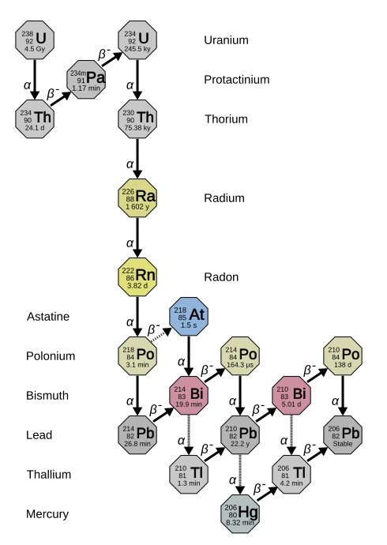

Model físic
- En una emissió el nucli perd 2 protons i 2 neutrons: baixa 4 i baixa 2.
- En una emissió un neutró es converteix en protó: es manté i puja 1.
- Com que canvia en 4 i no el canvia, el residu es conserva: per això hi ha exactament quatre sèries.
- La sèrie del neptuni () no es troba avui a la natura: els seus nuclids ja s'han desintegrat (semivides curtes comparades amb l'edat de la Terra).
Tria la sèrie
Cadena de desintegració

Les 4 sèries (resum)
- Sèrie del tori (4n): ²³²Th → ²⁰⁸Pb. Present a roques i sòls.
- Sèrie del neptuni (4n+1): ²³⁷Np → ²⁰⁹Bi. Extingida a la natura; s'obté artificialment.
- Sèrie de l'urani (4n+2): ²³⁸U → ²⁰⁶Pb. La més important geològicament; inclou el radó ²²²Rn.
- Sèrie de l'actini (4n+3): ²³⁵U → ²⁰⁷Pb. El ²³⁵U és el combustible fissil dels reactors.
- Branques: alguns nuclids (com ²¹²Bi o ²¹⁴Bi) es poden desintegrar per dos camins alhora; aquí es mostra el majoritari.
- Equilibri secular: quan el pare és molt més longeu que els fills, tots els nuclids de la cadena tenen la mateixa activitat (ex.: ²²⁶Ra i ²²²Rn).